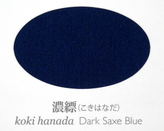
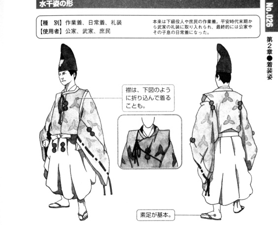

.i tu'e
xu preti lo poi mi kavbu ke'a ku'o nanmu goi ko'a
.i
ko'a jo'a du la .tajomar. no'u lo misno ke zekri lebna
.i ku'i
ca lo nu mi kavbu
sei la'a za'a ko'a fi lo xirma ba'o farlu
bu'u lo la .a,uadagutc. rokci cripu cpana
sa'ei .un.un. cu cmoni ca'o
.i
xu lo tcika cu se preti
.i
se tcika lo prulamcte ke pamoi ctetcika to'i sa'a lo pamoi ctetcika cu du lo tcika be fa li ji'i paso bi'o ji'i repa toi [ctetcika]
.i
pu za ku ca lo nu mi kavbu fliba ku ji'a
ko'a dasni lo vi blanrkonu 
to'i sa'a sitna la'o py 太田 耕嗣 『源氏物語 千年の色: 単色』, 太田工芸, 京都, 2005 py
.i
lo blanrkonu cu du lo xekri blanrxanada toi [blanrkonu] crekrsuikanu 
to'i sa'a sitna la'o py 池上 良太 『図解 日本の装束』, 新紀元社, 東京, 2008 py toi [crekrsuikanu] .e lo jinme darxi punli jadni ke barda dakfu
.i ku'i
ca ku lo ri drata ji'a no'u sei je'u do viska lo'e bagyce'a jo'u celga'a ku ji'a sai se ralte
.i .ua jo'a pei
lo pu se ralte be le lo de'u morsi xadni ku nanmu be'o ku ji'a co'e
sei sa'a zi smaji se'u
.i se ki'u bo
ju'o lo ca'a prenu catra cu du ko'a no'u la .tajomar.
.i
lo poi lo skapi cu sarlu vasru ku'o bagyce'a ku jo'u lo xekri cinta tubnu ku jo'u lo cipnrtaka to'i sa'a lo cipnrtaka cu du la'o ly Accipitridae ly toi [cipnrtaka] pimlu ke jamna celga'a paze mei ku
sei sa'a zi smaji se'u
sei fi vo'a ro mei le nanmu cu se ralte pu ju'o
.i jo'a
lo xirma goi ko'e ji'a sei je'u do cusku se'u cu katna cnici se kerfa gi'e skari kandi
.i
ko'a fi ko'e no'u lo danlu .ionai gau vo'i farlu
.i ju'o
zo'e re'e rinka lo nu go'i
.i
ko'e ze'o lo rokci cripu vi va'o lo nu fe lo clani skori cu te lasna ku lo dargu mlana ke crino rismrsusuki to'i sa'a lo rismrsusuki du la'o ly Miscanthus sinensis ly toi [rismrsusuki] pu ca'o citka
.i
ko'a no'u la .tajomar. verai lo'i poi ne'i la .rakutcun. mo'i zei zvati ku'o zekri lebna ku nelci lo'e ninmu
.i ti'e lo nu
ca lo prulamna'a critu bu'u lo cmana be ti'a lo no'u la .binzur. to'i sa'a la .binzur. du la'o sy Piṇḍola Bharadvāja sy toi [.binzur.] vi'u pixra pe lo no'u la .torib. malsi
lo poi la'a lijda vitke ku'o catni ninmu pa mei ku jo'u lo ninmu verba ba'o se catra kei ji'a
cu jalge zu'e ko'a
.i .iacu'i ru'a
lo poi se marce lo skari kandi ku'o ninmu ji'a
va'o lo nu ba'e ti le nanmu pu catra ku
fa'a zo'e co'e
.i
sei mi du'e mei cusku se'u ku'i
la'e di'u ji'a ko se lanli .e'u
tu'u
{kind=link}
{kind=link}